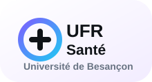
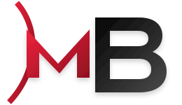
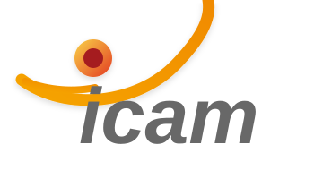
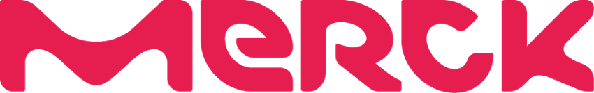

Profil
Waseem Altaweel
Ici, je présente mon parcours, ce qui a changé depuis mon arrivée en BTS SIO SISR, et la suite que je vise dans les systèmes numériques industriels.
Parcours
Mon parcours s'est construit par étapes : le lycée, une première orientation vers la santé, puis un vrai choix vers l'informatique avec le BTS SIO SISR et l'alternance chez MB Informatique.
2021 - 2022
Baccalauréat général
Lycée Montaigne de Mulhouse.
2022 - 2024

Licence Accès Santé
UFR Santé, Université de Besançon.
2024 - 2026

BTS SIO SISR
Formation à CCI Campus Strasbourg.
Depuis juillet 2024

Alternance
Systèmes, réseaux et support technique.
Alternance
MB Informatique
MB Informatique accompagne ses clients sur l'installation, la maintenance et le support de solutions informatiques, systèmes et réseaux. Mon alternance me permet de sortir du cadre uniquement scolaire : je dois comprendre les demandes, intervenir proprement, respecter les contraintes et produire quelque chose d'utile.
- Missions : support technique, diagnostic, systèmes, réseaux et documentation.
- Réalisations : projet Eva e-sport, projet Carrefour / pont Wi-Fi UniFi, procédures et documents techniques.
- Apprentissages : administration des systèmes et réseaux, réalisation de schémas, gestion de projet, travail en équipe, délais et responsabilité.
Evolution
Mon évolution en deux ans
CCI Campus AlsaceBTS SIO SISR
Ce tableau garde seulement trois idées fortes pour l'oral : mon organisation, ma progression technique et ma posture professionnelle.
Avant : passion sans méthode
→
Après : méthode BTS + posture pro
Organisation
Je travaillais au feeling, sans suivi stable.
Je planifie, je priorise et je garde une trace.
Technique
Je ne savais pas diagnostiquer clairement d'où venait un problème.
Je progresse avec des tests unitaires, des tests de ping et la vérification de la configuration réseau.
Monde professionnel
Je voyais surtout le travail comme une contrainte.
Je comprends l'équipe, les délais, le cahier des charges et les responsabilités.
Compétences
- Windows Server
- Linux
- Active Directory
- DNS / DHCP
- VLAN
- VPN IPsec
- pfSense
- OpenVPN
- UniFi
- Cisco
- Supervision
- Sauvegarde
- Support technique
- Documentation
- Cybersécurité
- CCNA en cours
Perspective
Objectif de poursuite d'études et d'alternance
Pour la suite, je veux relier l'informatique, les réseaux et le monde industriel. L'objectif est de continuer en école d'ingénieur tout en gardant une vraie expérience de terrain.

Formation visée
ICAM
Intégrer le cursus d'ingénieur spécialisé en systèmes numériques industriels à la rentrée 2026.

Future alternance
Merck Life Science
Évoluer sur un poste d'ingénieur informaticien industriel, au contact des systèmes, des équipements et des besoins de production.
Fil logique : BTS SIO SISR → systèmes et réseaux → systèmes numériques industriels → informatique industrielle chez Merck Life Science.